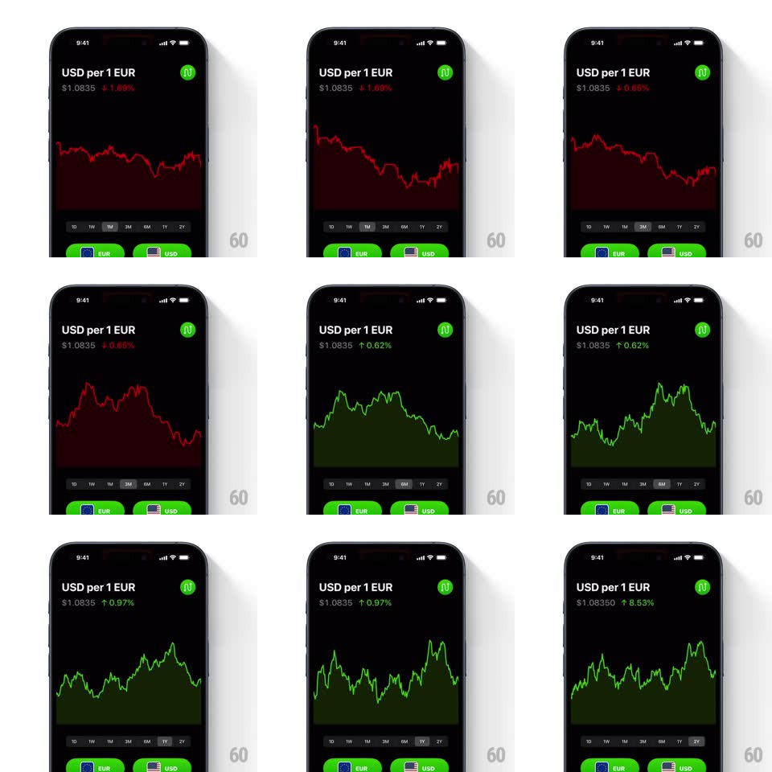

Media
Frame-by-frame

Rebuild this interaction 1:1: a currency rate screen whose area graph morphs between interval shapes when the 1D/1W/1M/3M/6M/1Y/2Y selector changes - the line's path tweens fluidly into the new series while the gradient fill, change percentage, and price color flip between green (up) and red (down).

Rebuild this interaction 1:1: a currency rate screen whose area graph morphs between interval shapes when the 1D/1W/1M/3M/6M/1Y/2Y selector changes - the line's path tweens fluidly into the new series while the gradient fill, change percentage, and price color flip between green (up) and red (down). ## Integration Integration: stack-agnostic spec - springs given as stiffness/damping, timed motions as duration + curve; map every value to your framework and animation library of choice. ## Scene Black screen: title "USD per 1 EUR", price "$1.0835", signed change pill (e.g. "↑0.32%" green / "↓1.68%" red), a large area chart with gradient fill, a segmented interval row (1D 1W 1M 3M 6M 1Y 2Y), and EUR/USD currency buttons at the bottom. ## Motion spec Pattern: interval-driven vector morph. - Interval tap: the chart path tweens point-by-point into the new series (~600ms, ease-in-out) - intermediate frames are a true morph, not a redraw; the area fill follows the path. - Color state: path and fill switch green <-> red based on the sign of the change; the transition runs through the morph (color tween synced to path tween). - The change value and arrow crossfade per interval (150ms); the selected segment's pill highlights with a quick background fade (150ms). - Y range re-fits per series: the morph includes the vertical rescale, so peaks never clip. ## Calibration - The morph must stay a single continuous stroke - no opacity dip between series. - Green/red is semantic (up/down over the interval), not per-interval branding. ## Reduced motion Crossfade between series (200ms) with the color swap; no path morph. ## Don't miss - The fill gradient fades to transparent toward the bottom - keep it under the line only. - The price line in the header ($1.0835) stays constant; only the change value updates per interval.